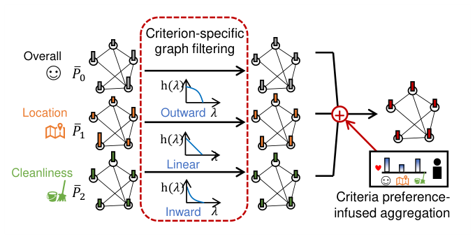

Criteria-Aware Graph Filtering: Extremely Fast Yet Accurate Multi-Criteria Recommendation (准则感知图滤波：极速且精准的多准则推荐)
- 会议/期刊: WWW 2025
- 作者与机构: Jin-Duk Park (Yonsei University), Jaemin Yoo (KAIST), Won-Yong Shin (Yonsei University & POSTECH)
- 推荐链路定位: 召回（Top-K 排序打分）
- 研究方向: 协同过滤与双塔召回 / 图神经网络与知识图谱推荐
- 论文原文: https://arxiv.org/abs/2502.09046v1
- 开源代码: https://github.com/jindeok/CA-GF
TL;DR (1分钟核心速览)
多准则（MC）推荐中，把 \(C+1\) 个评分矩阵喂给训练式 CF 会让训练开销随准则数近似平方级膨胀（8 准则时约 64 倍），而现有图滤波方案 GF-CF 的"理想低通滤波器"依赖昂贵 SVD 分解，无法直接扩展到多准则。本文提出 CA-GF：先用 MC 用户扩展图构造统一的 item–item 相似图，再对每个准则分别施加预定义多项式低通滤波器（Linear / Inward / Outward），最后用准则偏好矩阵加权聚合。全程免训练、免矩阵分解，在 BA 数据集上推理仅 0.2 秒（比 GF-CFMC 快 2160 倍），NDCG@5 相对最强基线最高提升 24%。
Background & Motivation (背景与核心矛盾)
- 主流范式: MC 推荐把总体评分拆成"总体 + 若干细粒度准则"（如餐厅的 food/service/location），主流做法是 AEMC、ExtendedSAE、CPA-LGC 等 DNN/GCN 训练式模型，或 CFM、DMCF 等矩阵分解式模型。
- 前人局限一（效率）: 训练式 CF 复杂度为 \(O(N^2)\)，准则数从 1 增至 8 时训练时间约涨 64 倍；图 1(b) 显示三个 DNN 基线在 TripAdvisor 上跑 100 epoch 的耗时远超单准则场景，而用户偏好演化快，这种延迟不可接受。
- 前人局限二（精度与结构）: 直接把单准则方法逐准则扩展（如 GF-CFMC 对每个准则各跑一次 GF-CF 再求和）既丢失跨准则协同信号，又因每个准则都要做一次 SVD 而无法规模化；DNN 类方法则难以显式利用 MC 评分间的复杂高阶结构。
- 核心洞察 (Key Insight): 单准则图滤波的成功来自"CF 评分天然呈低频模式"这一性质，而多项式滤波器（Turbo-CF 思路）可在不做特征分解的前提下逼近任意低通响应——这正好绕开 MC 场景下"多滤波器 = 多次 SVD"的算力瓶颈。
- 本文切入点: 把"准则"作为一等公民嵌入图滤波：一张跨准则统一图捕获准则间关系（G1），每个准则配一个独立多项式 LPF 保留其独特性（G2），全部用矩阵多项式实现以榨干 GPU 并行（G3）。
Method (核心方法设计)
1. 整体框架 (Overall Architecture)
CA-GF 分三步闭环：① 图构建——把每个用户复制成 \(C+1\)个"准则-用户"节点，与 item 节点构成二部图，再投影出统一的 item–item 相似图\(\tilde{P}_{\text{MC}}\)，并对边权做 Hadamard 幂调整得到\(\bar{P}_f\)；② 准则特定图滤波——对每个准则\(c\)从 {Linear, Inward, Outward} 三种二阶多项式 LPF 中选一个，把该准则的评分行向量作为图信号做卷积，得到\(\mathbf{s}_{u,c}\)；③ 准则偏好聚合——用由"用户各准则评分总量"导出的偏好矩阵\(\hat{C}\)对\(\mathbf{s}_{u,c}\)加权求和输出最终打分。全流程无参数训练、无特征分解，超参（滤波器类型、\(s_f\)）仅在验证集上做离散搜索。
flowchart TD
A["MC 评分矩阵 R_0..R_C"] --> B["MC 用户扩展图 R_MC 拼接+归一化"]
B --> C["item-item 相似图 P_MC 与 Hadamard 幂调整 P̄_f"]
C --> D["准则特定多项式图滤波 f(P̄_f,c)"]
A --> E["准则偏好矩阵 Ĉ 由 X 图滤波得到"]
D --> F["偏好加权聚合 ŝ_u"]
E --> F
F --> G["Top-K 推荐 + 归因可视化"]
2. 关键设计拆解 (Key Designs)
-
MC 用户扩展图 + 边权幂调整（捕获跨准则关系，G1）：若像 CPA-LGC 那样把 item 也扩展成准则-item 节点，item–item 图维度会膨胀 \(C+1\)倍。本文改为只扩展用户侧，令\(R_{\text{MC}}^T = R_0^T \| R_1^T \| \cdots \| R_C^T\)，归一化后取\(\tilde{P}_{\text{MC}} = \tilde{R}_{\text{MC}}^T \tilde{R}_{\text{MC}}\)，一张\(|I|\times|I|\)图即编码全部准则的共现语义。进一步对边权做\((\bar{P}_f)_{ij} = (\tilde{P}_{\text{MC}})_{ij}^{s_f}\)，因为二阶滤波器（Inward/Outward）比一阶更易过平滑，需用\(s_f\) 调节连接强度以恢复区分度。
-
准则特定多项式低通滤波（保留准则独特性，G2+G3）：痛点在于每个准则的最优频响不同（如酒店"价格"这类主观准则应少用低频分量），但为每个准则单独做 SVD 不可行。本文用 \(K\)阶矩阵多项式\(f(\bar{P}_{f,c}) = \sum_{k=1}^{K} a_{c,k}\bar{P}_f^k\)替代，据引理其频响为\(h(\lambda)=\sum_k a_{c,k}(1-\lambda)^k\)。具体预定义三种二阶滤波器：
- Linear：\(\bar{P}_f\)，\(h(\lambda)=1-\lambda\)；
- Inward：\(\bar{P}_f^2\)，\(h(\lambda)=\lambda^2-2\lambda+1\)；
- Outward：\(2\bar{P}_f-\bar{P}_f^2\)，\(h(\lambda)=1-\lambda^2\)。
三者对低频的保留强度依次不同，且全部是稀疏矩阵乘法，可直接跑在 PyTorch/CUDA 上并行，彻底消除分解开销。
- 准则偏好注入聚合与训练目标（个性化，G2）：简单求和忽略"用户更看重哪个准则"。作者假设"某准则上打分次数更多/分值更高 ⇒ 该用户更偏好该准则"，构造 \(X = (R_0\mathbf{1})\|\cdots\|(R_C\mathbf{1})\)，归一化后得准则–准则相似图\(T=\tilde{X}^T\tilde{X}\)，再对\(T\)做同样的幂调整与图滤波得偏好矩阵\(\hat{C}=\tilde{X}\bar{T}\)。最终打分为 $\(\mathbf{s}_u = \frac{1}{C+1}\sum_{c=0}^{C}\hat{C}_{u,c}\,\mathbf{r}_{u,c}\,f(\bar{P}_{f,c}).\)$ 由于无参数，不存在传统损失函数与负采样：训练集仅用于构图，超参（每准则滤波器类型、\(s_f\)）在验证集上网格搜索；推理即若干次稀疏矩阵乘，BA 上 0.2 秒完成全库打分。
Experimental Setup & Evaluation Protocol (实验设置与评估协议)
- 数据集与预处理: 三个公开 MC 推荐基准，未做 k-core 过滤（沿用原数据集划分）：
| 数据集 | #Users | #Items | #Overall Ratings | #MC Ratings | 准则数 \(C\) | 密度 |
|---|---|---|---|---|---|---|
| TripAdvisor (TA) | 5,132 | 7,205 | 41,638 | 280,521 | 7 | 0.11% |
| Yahoo!Movie (YM) | 1,827 | 1,471 | 46,239 | 231,195 | 4 | 1.72% |
| BeerAdvocate (BA) | 10,726 | 10,832 | 626,995 | 3,134,981 | 4 | 0.54% |
- 数据划分与防穿越 (Splitting Strategy): 每个用户交互随机 80% 训练 / 20% 测试，训练集内再随机取 10% 作验证集调参（随机划分，非时间戳切分）。
- 排名评测协议 (Ranking Protocol): 测试阶段将总体评分高于测试集中位数的交互视为正样本，对用户未交互物品做 Full-Ranking 全库排序，报告 Recall@{5,10} 与 NDCG@{5,10}；非确定性方法取 10 次独立运行均值。
- 对比基线与超参设置: 6 个 MC 基线（ExtendedSAE、AEMC、DMCF、CFM、CPA-LGC、GF-CFMC）+ 4 个单准则基线（NGCF、LightGCN、GF-CF、DiffRec，仅用总体评分）；训练式方法 embedding 维度 64、Adam、batch 128；统一在 i7-9700K + RTX A6000 上评测。
Key Experimental Results (实验关键数据)
1. 主实验对比 (Main Results)
三个数据集上 NDCG 指标（Recall 趋势一致，此处取核心列）：
| 方法 | MC | TA N@5 | TA N@10 | YM N@5 | YM N@10 | BA N@5 | BA N@10 |
|---|---|---|---|---|---|---|---|
| LightGCN | ✗ | 0.0512 | 0.0586 | 0.1154 | 0.1325 | 0.1320 | 0.1298 |
| GF-CF | ✗ | 0.0570 | 0.0612 | 0.1440 | 0.1574 | 0.1333 | 0.1344 |
| DiffRec | ✗ | 0.0527 | 0.0637 | 0.1123 | 0.1420 | 0.1230 | 0.1392 |
| AEMC | ✓ | 0.0530 | 0.0574 | 0.0909 | 0.0990 | 0.0737 | 0.0752 |
| CFM | ✓ | 0.0357 | 0.0398 | 0.0392 | 0.0538 | 0.0891 | 0.0920 |
| CPA-LGC | ✓ | 0.0550 | 0.0650 | 0.1392 | 0.1532 | 0.1388 | 0.1396 |
| GF-CFMC | ✓ | 0.0595 | 0.0645 | 0.1457 | 0.1588 | 0.1329 | 0.1344 |
| CA-GF | ✓ | 0.0738 | 0.0774 | 0.1476 | 0.1608 | 0.1464 | 0.1477 |
| Improv.% (vs. best) | +24.0% | +19.1% | +1.3% | +1.3% | +5.5% | +5.8% |
效率对比（BA，最大数据集）：CA-GF 训练 0 秒、总运行 0.2 s、NDCG@10 = 0.1477；GF-CFMC 274 s / 0.1344；CPA-LGC 10,020 s / 0.1396；AEMC 1,022 s / 0.0752；ExtendedSAE 11,520 s / 0.0052。即 CA-GF 比 GF-CFMC 快约 2160×，且精度更高。
2. 消融实验 (Ablation Study)
Recall@10 对比（TA / YM / BA）：
| 变体 | 说明 | TA | YM | BA |
|---|---|---|---|---|
| CA-GF | 完整模型 | 0.0854 | 0.1765 | 0.1147 |
| CA-GF-m | 去掉 MC 用户扩展图（仅总体评分） | 0.0718 | 0.1751 | 0.1031 |
| CA-GF-s | 所有 \(s_f\) 置 1（去掉幂调整） | 0.0713 | 0.1698 | 0.1076 |
| CA-GF-f | 全部准则统一用 Linear LPF | 0.0725 | 0.1751 | 0.1077 |
| CA-GF-p | 去掉偏好聚合，改为等权求和 | 0.0840 | 0.1760 | 0.1143 |
3. 关键实验发现 (Key Findings)
- 跨准则统一图是最大增益源：去掉 MC 扩展图（CA-GF-m）在 TA 上 Recall@10 从 0.0854 掉到 0.0718（−15.9%），BA 上掉 10.1%，说明把多准则评分拼进同一张 item–item 图所捕获的跨准则协同信号，比任何单一准则信号都更有价值。
- "一准则一滤波器"与幂调整缺一不可：统一用 Linear（CA-GF-f）在 TA/BA 分别损失 15.1%/6.1%，而固定 \(s_f=1\)（CA-GF-s）损失 16.5%/6.2%；图 5 进一步显示 Linear 的最优\(s_f<1\)、Inward/Outward 的最优\(s_f>1\)，印证二阶滤波器更易过平滑、需靠\(s_f\) 拉开数值区分度。
- 偏好聚合是"锦上添花"而非主力：CA-GF-p 仅比完整模型低 1.6%/0.3%/0.3%，但其价值在于提供可解释性——图 6 的归因图显示 check-in 与 rooms 两个准则对 TA 预测贡献显著偏低，与"用户更关注 cleanliness/location"的业务直觉一致，可直接指导运营侧改进。
Highlights & Limitations (亮点、对比与审稿批判)
- 与代表作对比 (vs. Prior Work): 相比 CPA-LGC（首个把 LightGCN 引入 MC 推荐的工作），CA-GF 用免训练的闭式滤波替代了多层图卷积训练，精度更高且快 5 万倍量级；相比 GF-CFMC（GF-CF 的朴素多准则扩展），CA-GF 用多项式滤波器替代 SVD 理想滤波器，并额外引入准则特定滤波与偏好聚合，在 BA 上同时实现 2160× 加速与精度反超；相比 Turbo-CF（单准则多项式滤波），本文把多项式滤波从"一个全局滤波器"扩展为"每准则一个滤波器 + 跨准则统一图"。
- 可迁移亮点: ① "用户侧扩展 + item 侧不扩展"的构图技巧，可推广到任何多视图/多行为（点击-收藏-购买）推荐，避免 item 图维度爆炸；② 用 Hadamard 幂 \(s_f\) 调节二阶滤波器的过平滑，是一个几乎零成本、可即插即用的调优旋钮。
- 审稿级局限批判: ① 滤波器类型与 \(s_f\)靠验证集网格搜索，准则数\(C\) 增大时搜索空间线性膨胀，论文未给出自适应选滤波器的方案（作者亦在结论中列为未来工作）；② 评估仅用随机 80/20 划分与中位数二值化，未做时间戳切分或冷启动划分，且未报告显著性检验，泛化性证据偏弱；③ 偏好聚合基于"打分多/分高即偏好强"的强假设，对刷分或评分尺度不一致的用户可能失真。
Rating (四维评分)
- 方法创新性 (Novelty): ⭐⭐⭐⭐ （首次把多项式图滤波系统性地移植到多准则场景，"准则特定滤波器 + 跨准则统一图"的组合有清晰的设计目标 G1–G3 支撑，但单点技术多为已有组件的巧妙重组）
- 评估协议与实验扎实度 (Protocol & Experiments): ⭐⭐⭐ （三数据集 + 10 个基线 + 完整消融与敏感性分析较充分，但随机划分、中位数二值化、缺显著性检验削弱了结论强度）
- 写作与数学规范度 (Clarity & Rigor): ⭐⭐⭐⭐ （引理与三条推论把三种滤波器的频响讲得干净利落，复杂度分析置于附录，符号统一；偏好矩阵推导略紧凑）
- 工业落地与复现价值 (Industrial & Practical Value): ⭐⭐⭐⭐⭐ （免训练免分解、0.2 秒全库打分、代码开源，对需要频繁重训的电商/本地生活场景落地价值极高）